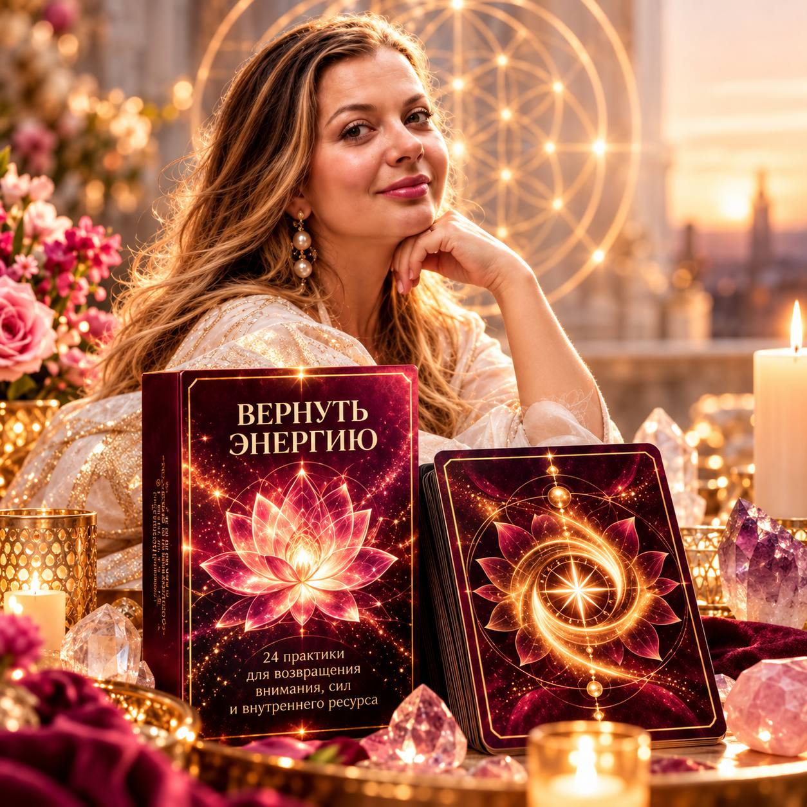
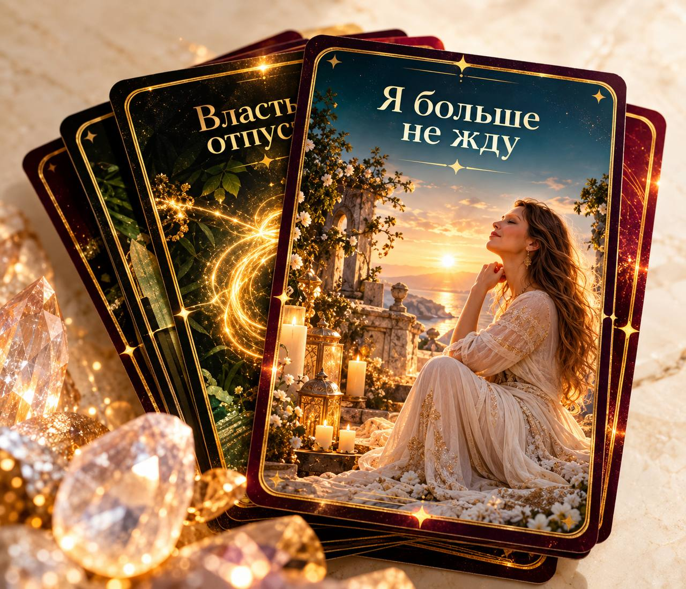
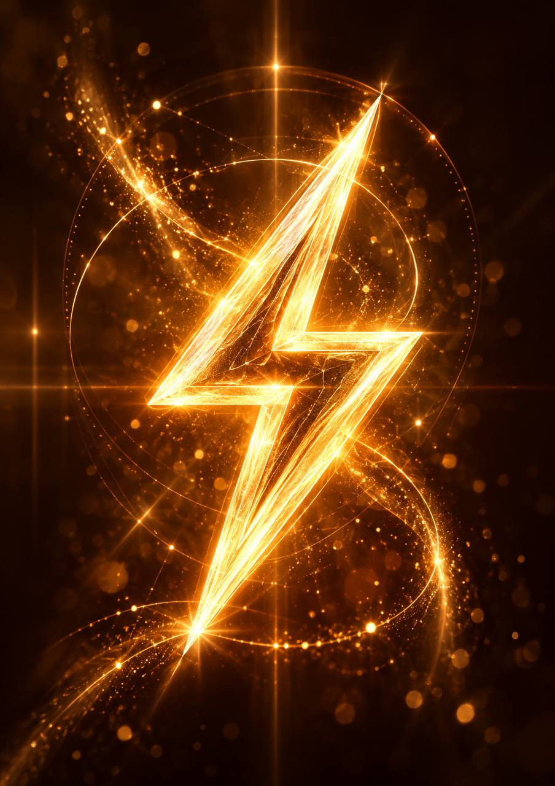
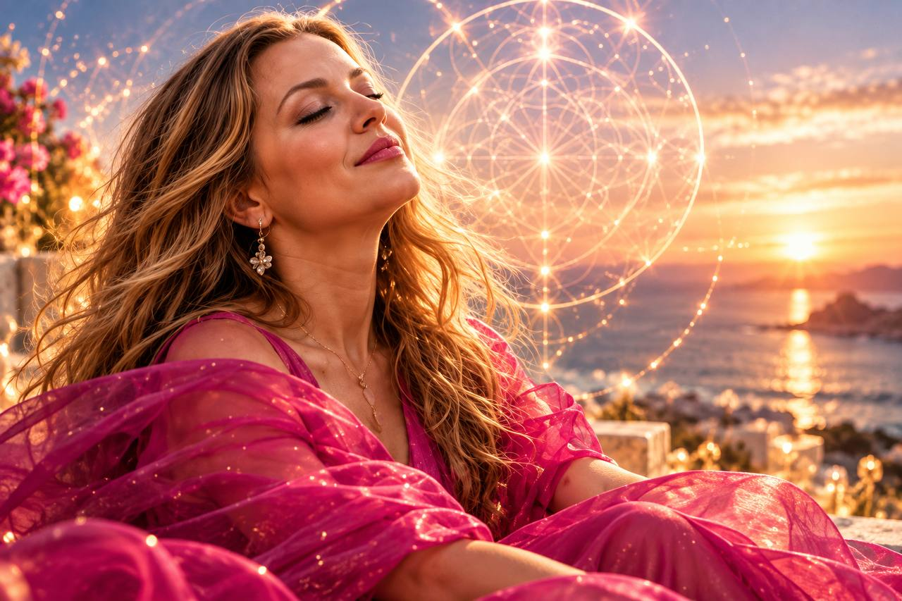

Связи
Незавершенные разговоры, ожидания, чужие чувства и ответственность.
Верни себе внимание из отношений и историй, которые продолжаются внутри тебя.
24 практики для возвращения внимания, сил и внутреннего ресурса
Если есть ощущение, что сил больше нет, возможно, часть твоей энергии просто занята тем, что ты продолжаешь удерживать:

Ты можешь отдыхать и все равно чувствовать усталость. Потому что отдых восстанавливает силы, но не всегда освобождает внимание, которое продолжает быть занято.
Иногда вопрос не в том, где взять еще больше энергии, а в том, куда перестать ее отдавать.

«Вернуть энергию» — колода из 24 психологических практик для самостоятельной работы с состоянием, вниманием и внутренним ресурсом.
Она помогает не просто спросить себя: «Почему у меня нет сил?» А исследовать:
Определи, где сейчас остается твое внимание.
Это может быть человек, ситуация, прошлое, страх, ожидание, необходимость что-то доказать или попытка все контролировать.
Посмотри, что именно удерживает тебя в этой истории.
Что ты продолжаешь ждать? Контролировать? Доказывать? Проигрывать в голове? Нести вместо другого?
Сделай конкретное действие, которое поможет освободить часть ресурса.
Сформулируй новое решение, границу, разрешение или выбор.
Чтобы не просто увидеть старый механизм, а создать для себя новую внутреннюю опору.
Незавершенные разговоры, ожидания, чужие чувства и ответственность.
Верни себе внимание из отношений и историй, которые продолжаются внутри тебя.
Сожаления, непринятые решения, несбывшиеся сценарии.
Оставь прошлому то, что уже завершилось, и забери с собой опыт, который стал твоим.
Чужие решения, неопределенность и попытка предусмотреть все.
Перестань тратить силы на то, чем невозможно управлять, и верни себе настоящее.
Тревожные сценарии, ожидание опасности и страх сделать шаг.
Верни внимание из предполагаемого будущего в настоящий момент и найди опору здесь.
Необходимость быть хорошей, сильной, удобной, идеальной, спасать или что-то доказывать.
Увидь, сколько энергии требуется на поддержание роли, и разреши себе быть собой.
Твои качества, желания, права и части себя, которые когда-то оказались связаны с другой историей или человеком.
Верни себе то, что всегда принадлежало тебе.

После каждой практики остановись и спроси себя:
Не нужно заставлять себя «отпустить все». Может вернуться совсем немного. А иногда одно осознание освобождает большой внутренний ресурс.
Важно не сколько, а заметить момент, когда твое внимание перестает принадлежать прошлому, страху, борьбе или другому человеку и снова становится доступно тебе.
Мы не создаем новую энергию. Она уже есть. Мы возвращаем себе ту, которую продолжаем направлять туда, где она больше не нужна.
Например: «Почему у меня нет сил?», «Что забирает мое внимание?», «Что я продолжаю удерживать?», «Откуда мне важно вернуть свой ресурс?»
Осознанно или случайным образом.
Найди → Заметь → Верни → Закрепи
Что изменилось в твоем состоянии? Что стало легче? Какая часть внимания освободилась?
Вернуть энергию — только половина процесса. Вторая половина — выбрать, что ты хочешь создавать с ее помощью.

Колоду «Вернуть энергию» можно использовать как самостоятельный инструмент. При этом она также входит в авторскую трансформационную игру «Точка силы», где является частью более глубокого пути:

Не всегда нужно искать новую мотивацию. Не всегда нужно заставлять себя делать больше. Достаточно увидеть, что до сих пор забирает твое внимание, и перестать направлять туда столько своей энергии.
Куда я хочу направить ее теперь?